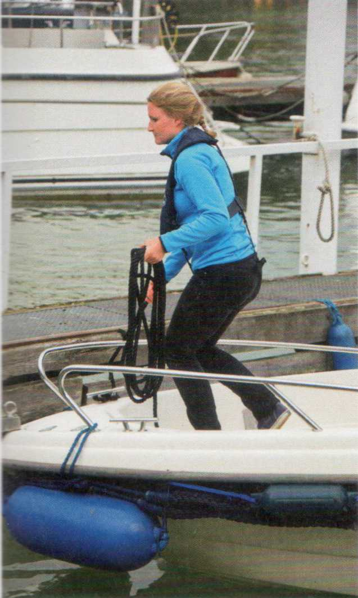
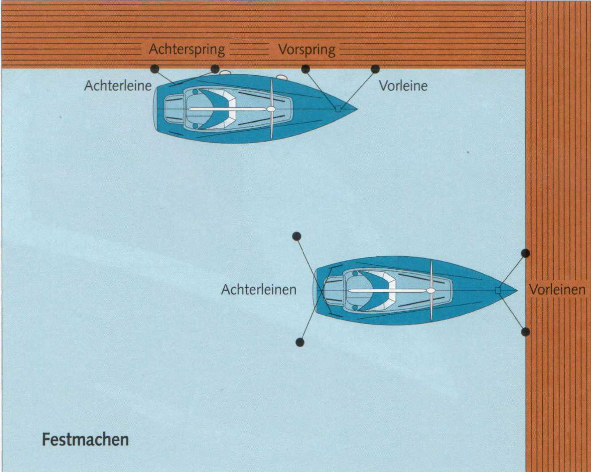

Швартуются лагом (längsseits) или в боксе (Stegbox), в зависимости от местных условий.
При стоянке лагом, помимо носового (Vorleine) и кормового (Achterleine), заводят носовой и кормовой шпринги (Spring). Шпринг удерживает лодку: она не может перемещаться вдоль причала или рыскать (abscheren) носом или кормой, как это обычно бывает от ветра или течения.

Между корпусом (Rumpf) и причалом (Steg) или пирсом размещают защитные кранцы (Fender). Их нужно закрепить так, чтобы они не сдвигались на причал или на палубу и не становились бесполезными. При отходе их сразу убирают. Ходить под парусом с болтающимися за бортом кранцами считается неморским (unseemännisch).
В боксе заводят по два носовых и кормовых швартова, которые должны иметь достаточную слабину, чтобы лодка не повисала на них. Носовые желательно разводить как можно шире — тогда они работают как пружинный комплект и лодка не так сильно дёргает швартовы при волнении (Schwell). Кормовые следует заводить крестом (über Kreuz), чтобы лодка не смещалась слишком далеко в сторону.
Названия швартовов определяются носовой и кормовой частью судна. Кормовые, таким образом, могут вести к кормовым сваям, но также и к причалу, если лодка стоит кормой к нему.
Длину швартовов регулируют с борта, а не с причала. Излишек троса укладывают на палубе (Deck) бухтой.
К бую (Boje) обычно крепятся только одним носовым. Лодка может свободно разворачиваться (schwojen) вокруг буйрепа, если шверт (Schwert) и перо руля (Ruderblatt) подняты.
Палуба чиста! (Klar Deck überall!) после швартовки означает: всё аккуратно уложить и убрать. Шверт и перо руля поднять, чтобы при покачивании лодки они не болтались и не перегружали швертовый колодец (Schwertkasten) и головку руля. Румпель (Pinne) зафиксировать, фалы (Fallen) отвести от мачты (Mast), чтобы при ветре они не стучали. Открытую лодку по возможности накрыть чехлом (Persenning), если она будет стоять длительное время.
